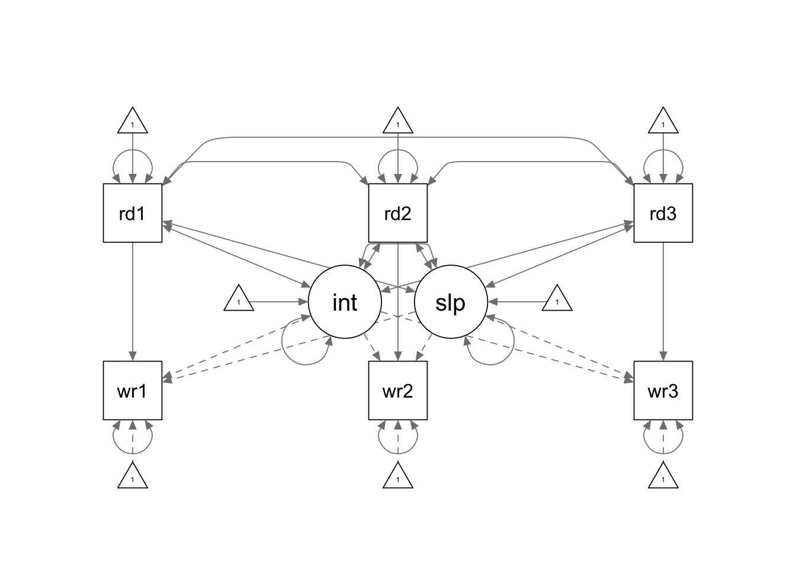
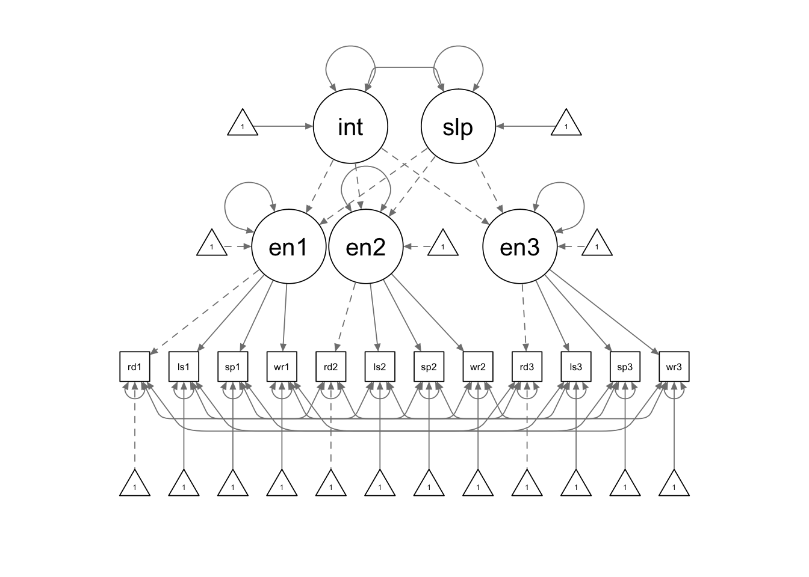
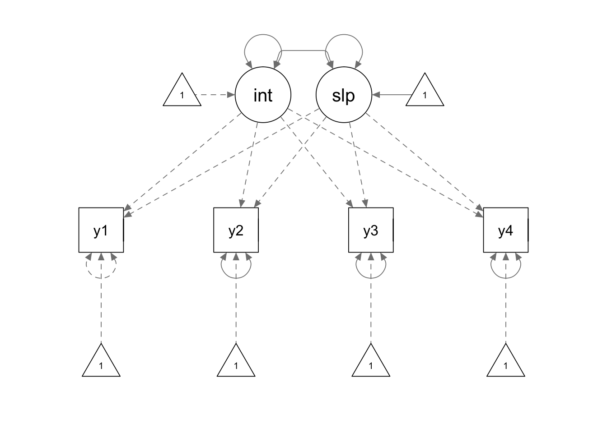

In this tutorial, we are going to use the R package lavaan for advanced latent growth models and package OpenMx for mixture growth models.
library(lavaan)
library(semPlot)
library(OpenMx)
library(readr)The data for this example are from 324 non-native English speakers, whose reading ability and writing ability have been measured at three equally spaced time points (1 month apart).
lower <- '
42.916
32.060 39.350
29.666 28.796 37.428
18.070 17.553 16.614 20.924
17.863 17.192 16.142 14.665 17.987
17.294 17.261 17.032 14.893 13.786 18.103
'
covmat <- getCov(lower)
smeans <- c(17.080, 18.404, 19.228, 18.590, 19.352, 20.265)
rownames(covmat) <- colnames(covmat) <- c(paste0("read", 1:3), paste0("write", 1:3))
No special syntax is required for you to fit a LGM with time dependent covariates. You only need to correctly specify the covariance structure and mean structure for your model using the regular lavaan model syntax. This is another example showing you that it is more important to have a good understanding of the models before you translate it into programming language. :)
tdc.model <- '
# latent intercept and slope
interc =~ 1*write1 + 1*write2 + 1*write3
slope =~ 0*write1 + 1*write2 + 2*write3
# path coefficients
write1 ~ read1
write2 ~ read2
write3 ~ read3
# covariances
read1 ~~ interc + slope + read2 + read3
read2 ~~ interc + slope + read3
read3 ~~ interc + slope
# means
read1 ~ 1
read2 ~ 1
read3 ~ 1
'
tdc.fit <- growth(tdc.model, sample.cov = covmat, sample.mean = smeans, sample.nobs = 324)
summary(tdc.fit, fit.measures = T, standardized = T)## lavaan 0.6-8 ended normally after 165 iterations
##
## Estimator ML
## Optimization method NLMINB
## Number of model parameters 26
##
## Number of observations 324
##
## Model Test User Model:
##
## Test statistic 0.189
## Degrees of freedom 1
## P-value (Chi-square) 0.664
##
## Model Test Baseline Model:
##
## Test statistic 1522.714
## Degrees of freedom 15
## P-value 0.000
##
## User Model versus Baseline Model:
##
## Comparative Fit Index (CFI) 1.000
## Tucker-Lewis Index (TLI) 1.008
##
## Loglikelihood and Information Criteria:
##
## Loglikelihood user model (H0) -5214.836
## Loglikelihood unrestricted model (H1) -5214.742
##
## Akaike (AIC) 10481.672
## Bayesian (BIC) 10579.972
## Sample-size adjusted Bayesian (BIC) 10497.502
##
## Root Mean Square Error of Approximation:
##
## RMSEA 0.000
## 90 Percent confidence interval - lower 0.000
## 90 Percent confidence interval - upper 0.112
## P-value RMSEA <= 0.05 0.770
##
## Standardized Root Mean Square Residual:
##
## SRMR 0.005
##
## Parameter Estimates:
##
## Standard errors Standard
## Information Expected
## Information saturated (h1) model Structured
##
## Latent Variables:
## Estimate Std.Err z-value P(>|z|) Std.lv Std.all
## interc =~
## write1 1.000 4.180 0.919
## write2 1.000 4.180 0.982
## write3 1.000 4.180 0.987
## slope =~
## write1 0.000 NA NA
## write2 1.000 NA NA
## write3 2.000 NA NA
##
## Regressions:
## Estimate Std.Err z-value P(>|z|) Std.lv Std.all
## write1 ~
## read1 -0.077 0.076 -1.012 0.312 -0.077 -0.110
## write2 ~
## read2 0.001 0.039 0.032 0.975 0.001 0.002
## write3 ~
## read3 0.080 0.071 1.135 0.256 0.080 0.116
##
## Covariances:
## Estimate Std.Err z-value P(>|z|) Std.lv Std.all
## interc ~~
## read1 21.146 3.637 5.814 0.000 5.059 0.773
## slope ~~
## read1 -3.197 2.310 -1.384 0.166 -5.913 -0.904
## read1 ~~
## read2 31.961 2.887 11.072 0.000 31.961 0.780
## read3 29.574 2.762 10.709 0.000 29.574 0.740
## interc ~~
## read2 19.790 3.129 6.326 0.000 4.735 0.756
## slope ~~
## read2 -2.506 1.943 -1.289 0.197 -4.634 -0.740
## read2 ~~
## read3 28.707 2.657 10.803 0.000 28.707 0.750
## interc ~~
## read3 18.664 2.943 6.342 0.000 4.466 0.731
## slope ~~
## read3 -2.405 2.125 -1.132 0.258 -4.447 -0.728
## interc ~~
## slope -1.477 1.567 -0.942 0.346 -0.653 -0.653
##
## Intercepts:
## Estimate Std.Err z-value P(>|z|) Std.lv Std.all
## read1 17.080 0.363 47.003 0.000 17.080 2.611
## read2 18.404 0.348 52.891 0.000 18.404 2.938
## read3 19.228 0.339 56.660 0.000 19.228 3.148
## .write1 0.000 0.000 0.000
## .write2 0.000 0.000 0.000
## .write3 0.000 0.000 0.000
## interc 19.907 1.321 15.070 0.000 4.763 4.763
## slope -0.588 1.115 -0.528 0.598 NA NA
##
## Variances:
## Estimate Std.Err z-value P(>|z|) Std.lv Std.all
## .write1 6.218 1.046 5.945 0.000 6.218 0.300
## .write2 3.864 0.486 7.942 0.000 3.864 0.213
## .write3 5.061 0.913 5.541 0.000 5.061 0.282
## read1 42.784 3.361 12.728 0.000 42.784 1.000
## read2 39.229 3.082 12.728 0.000 39.229 1.000
## read3 37.312 2.932 12.728 0.000 37.312 1.000
## interc 17.469 3.596 4.858 0.000 1.000 1.000
## slope -0.292 0.591 -0.495 0.621 NA NAThe second-order LGM is discussed in detail in Hancock, Kuo, & Lawrence (2001). In this example, we have data collected from 170 male non-native adult English speakers. Their English language ability has been measured monthly for three months. The data is saved in a txt file named “second_order_data.txt”.
setwd(mypath) # set working directory to where the data file is stored
second.data <- read.delim("second_order_data.txt", sep = '\t', header = F)
colnames(second.data) <- c('read1', 'read2', 'read3', 'list1', 'list2', 'list3',
'speak1', 'speak2', 'speak3', 'write1', 'write2', 'write3')
str(second.data)## 'data.frame': 170 obs. of 12 variables:
## $ read1 : int 22 19 24 21 24 17 14 30 19 11 ...
## $ read2 : int 24 19 26 24 26 21 19 29 23 6 ...
## $ read3 : int 23 17 30 27 28 20 20 29 23 13 ...
## $ list1 : int 28 18 27 18 29 18 14 27 13 15 ...
## $ list2 : int 30 16 30 20 28 16 7 18 10 8 ...
## $ list3 : int 29 17 27 18 26 17 10 24 17 19 ...
## $ speak1: int 23 19 24 22 17 14 14 23 17 23 ...
## $ speak2: int 23 18 24 17 18 17 10 22 17 22 ...
## $ speak3: int 23 18 29 17 19 15 10 23 18 24 ...
## $ write1: int 25 17 21 18 20 21 14 22 17 17 ...
## $ write2: int 22 20 24 21 20 17 18 25 20 18 ...
## $ write3: int 21 25 27 22 22 21 18 22 17 18 ...summary(second.data)## read1 read2 read3 list1
## Min. : 0.00 Min. : 3.00 Min. : 4.00 Min. : 1.00
## 1st Qu.:13.00 1st Qu.:14.00 1st Qu.:16.00 1st Qu.:13.00
## Median :17.00 Median :19.00 Median :20.00 Median :17.00
## Mean :17.38 Mean :18.55 Mean :19.55 Mean :16.56
## 3rd Qu.:22.00 3rd Qu.:23.00 3rd Qu.:23.00 3rd Qu.:21.00
## Max. :30.00 Max. :30.00 Max. :30.00 Max. :30.00
## list2 list3 speak1 speak2
## Min. : 1.00 Min. : 1.00 Min. : 0.00 Min. : 5.00
## 1st Qu.:14.00 1st Qu.:15.00 1st Qu.:15.00 1st Qu.:17.00
## Median :18.00 Median :19.00 Median :18.00 Median :18.00
## Mean :17.63 Mean :18.58 Mean :17.96 Mean :18.73
## 3rd Qu.:21.75 3rd Qu.:23.00 3rd Qu.:20.00 3rd Qu.:22.00
## Max. :30.00 Max. :30.00 Max. :28.00 Max. :27.00
## speak3 write1 write2 write3
## Min. :10.00 Min. : 7.00 Min. : 8.00 Min. : 7.00
## 1st Qu.:17.00 1st Qu.:15.00 1st Qu.:17.00 1st Qu.:18.00
## Median :19.00 Median :20.00 Median :20.00 Median :20.50
## Mean :19.24 Mean :18.59 Mean :19.58 Mean :20.11
## 3rd Qu.:22.00 3rd Qu.:21.00 3rd Qu.:22.00 3rd Qu.:22.00
## Max. :29.00 Max. :30.00 Max. :28.00 Max. :29.00
There is still no special syntax required for second-order LGM, although the model syntax looks lengthy. There are a few constraints we need to pay special attention to:
second.model <- '
# first-order latent factors
english1 =~ read1 + a*list1 + b*speak1 + c*write1
english2 =~ read2 + a*list2 + b*speak2 + c*write2
english3 =~ read3 + a*list3 + b*speak3 + c*write3
# second-order growth factors
interc =~ 1*english1 + 1*english2 + 1*english3
slope =~ 0*english1 + 1*english2 + 2*english3
# second-order factor covariances and intercept
interc ~~ slope
interc ~ 1
slope ~ 1
# residual covariances
read1 ~~ read2 + read3
read2 ~~ read3
list1 ~~ list2 + list3
list2 ~~ list3
speak1 ~~ speak2 + speak3
speak2 ~~ speak3
write1 ~~ write2 + write3
write2 ~~ write3
# fix zero intercepts
read1 ~ 0*1
read2 ~ 0*1
read3 ~ 0*1
# equality constraints on the intercepts
list1 ~ d*1
list2 ~ d*1
list3 ~ d*1
speak1 ~ e*1
speak2 ~ e*1
speak3 ~ e*1
write1 ~ f*1
write2 ~ f*1
write3 ~ f*1
'
second.fit <- sem(second.model, second.data)
summary(second.fit, fit.measures = T)## lavaan 0.6-8 ended normally after 190 iterations
##
## Estimator ML
## Optimization method NLMINB
## Number of model parameters 50
## Number of equality constraints 12
##
## Number of observations 170
##
## Model Test User Model:
##
## Test statistic 109.864
## Degrees of freedom 52
## P-value (Chi-square) 0.000
##
## Model Test Baseline Model:
##
## Test statistic 1711.627
## Degrees of freedom 66
## P-value 0.000
##
## User Model versus Baseline Model:
##
## Comparative Fit Index (CFI) 0.965
## Tucker-Lewis Index (TLI) 0.955
##
## Loglikelihood and Information Criteria:
##
## Loglikelihood user model (H0) -5353.225
## Loglikelihood unrestricted model (H1) -5298.293
##
## Akaike (AIC) 10782.450
## Bayesian (BIC) 10901.610
## Sample-size adjusted Bayesian (BIC) 10781.289
##
## Root Mean Square Error of Approximation:
##
## RMSEA 0.081
## 90 Percent confidence interval - lower 0.060
## 90 Percent confidence interval - upper 0.102
## P-value RMSEA <= 0.05 0.010
##
## Standardized Root Mean Square Residual:
##
## SRMR 0.066
##
## Parameter Estimates:
##
## Standard errors Standard
## Information Expected
## Information saturated (h1) model Structured
##
## Latent Variables:
## Estimate Std.Err z-value P(>|z|)
## english1 =~
## read1 1.000
## list1 (a) 1.129 0.096 11.799 0.000
## speak1 (b) 0.657 0.062 10.667 0.000
## write1 (c) 0.835 0.068 12.221 0.000
## english2 =~
## read2 1.000
## list2 (a) 1.129 0.096 11.799 0.000
## speak2 (b) 0.657 0.062 10.667 0.000
## write2 (c) 0.835 0.068 12.221 0.000
## english3 =~
## read3 1.000
## list3 (a) 1.129 0.096 11.799 0.000
## speak3 (b) 0.657 0.062 10.667 0.000
## write3 (c) 0.835 0.068 12.221 0.000
## interc =~
## english1 1.000
## english2 1.000
## english3 1.000
## slope =~
## english1 0.000
## english2 1.000
## english3 2.000
##
## Covariances:
## Estimate Std.Err z-value P(>|z|)
## interc ~~
## slope -0.781 0.732 -1.068 0.286
## .read1 ~~
## .read2 11.998 2.151 5.577 0.000
## .read3 11.178 1.990 5.618 0.000
## .read2 ~~
## .read3 10.096 1.831 5.514 0.000
## .list1 ~~
## .list2 5.659 1.786 3.169 0.002
## .list3 3.769 1.470 2.565 0.010
## .list2 ~~
## .list3 5.682 1.705 3.333 0.001
## .speak1 ~~
## .speak2 4.520 0.800 5.647 0.000
## .speak3 4.329 0.778 5.564 0.000
## .speak2 ~~
## .speak3 4.616 0.763 6.052 0.000
## .write1 ~~
## .write2 1.562 0.741 2.109 0.035
## .write3 1.701 0.702 2.425 0.015
## .write2 ~~
## .write3 2.366 0.744 3.179 0.001
##
## Intercepts:
## Estimate Std.Err z-value P(>|z|)
## interc 17.631 0.450 39.147 0.000
## slope 0.928 0.111 8.337 0.000
## .read1 0.000
## .read2 0.000
## .read3 0.000
## .list1 (d) -3.342 1.837 -1.819 0.069
## .list2 (d) -3.342 1.837 -1.819 0.069
## .list3 (d) -3.342 1.837 -1.819 0.069
## .speak1 (e) 6.455 1.186 5.441 0.000
## .speak2 (e) 6.455 1.186 5.441 0.000
## .speak3 (e) 6.455 1.186 5.441 0.000
## .write1 (f) 3.934 1.310 3.002 0.003
## .write2 (f) 3.934 1.310 3.002 0.003
## .write3 (f) 3.934 1.310 3.002 0.003
## .english1 0.000
## .english2 0.000
## .english3 0.000
##
## Variances:
## Estimate Std.Err z-value P(>|z|)
## .read1 23.986 2.918 8.220 0.000
## .list1 14.093 2.060 6.841 0.000
## .speak1 8.241 1.037 7.945 0.000
## .write1 5.534 0.944 5.864 0.000
## .read2 19.614 2.384 8.228 0.000
## .list2 20.410 2.607 7.830 0.000
## .speak2 7.290 0.904 8.064 0.000
## .write2 6.399 0.960 6.668 0.000
## .read3 16.424 2.059 7.978 0.000
## .list3 12.798 1.821 7.029 0.000
## .speak3 7.018 0.880 7.971 0.000
## .write3 5.524 0.870 6.346 0.000
## .english1 1.501 1.340 1.120 0.263
## .english2 -0.106 0.635 -0.167 0.868
## .english3 0.320 1.199 0.267 0.790
## interc 17.577 3.307 5.314 0.000
## slope 0.304 0.623 0.488 0.625Assume we want to fit a linear LGM with ordinal data collected at four equally spaced time points. The data is saved in a txt file named “categorical_data.txt” in your course materials.
setwd(mypath) # set working directory to where the data file is stored
cat.data <- read.table("categorical_data.txt", header = F)
colnames(cat.data) <- c("y1", "y2", "y3", "y4")
cat.data <- apply(cat.data, 2, ordered)
str(cat.data)## chr [1:369, 1:4] "0" "0" "1" "0" "0" "0" "0" "0" "0" "0" "0" "0" "0" "0" ...
## - attr(*, "dimnames")=List of 2
## ..$ : NULL
## ..$ : chr [1:4] "y1" "y2" "y3" "y4"summary(cat.data)## y1 y2 y3 y4
## Length:369 Length:369 Length:369 Length:369
## Class :character Class :character Class :character Class :character
## Mode :character Mode :character Mode :character Mode :character
We define our model using the following model syntax. Some notes for this model syntax:
When calling up the fitting function, we use the ordered = argument to specify the categorical variables. We can also request theta parameterization using the parameterization = argument.
cat.lgm <- '
# growth latent factors
interc =~ 1*y1 + 1*y2 + 1*y3 + 1*y4
slope =~ 0*y1 + 1*y2 + 2*y3 + 3*y4
# means of latent factors
interc ~ 0*1
slope ~ 1
# Equality constraints on the threshold
y1 | a*t1 + b*t2
y2 | a*t1 + b*t2
y3 | a*t1 + b*t2
y4 | a*t1 + b*t2
# variances
y1 ~~ 1*y1
y2 ~~ y2
y3 ~~ y3
y4 ~~ y4
'
cat.fit <- sem(cat.lgm, cat.data, ordered = c("y1","y2","y3","y4"), parameterization = "theta")
summary(cat.fit, fit.measures = T)## lavaan 0.6-8 ended normally after 57 iterations
##
## Estimator DWLS
## Optimization method NLMINB
## Number of model parameters 15
## Number of equality constraints 6
##
## Number of observations 369
##
## Model Test User Model:
## Standard Robust
## Test Statistic 2.355 4.948
## Degrees of freedom 5 5
## P-value (Chi-square) 0.798 0.422
## Scaling correction factor 0.530
## Shift parameter 0.507
## simple second-order correction
##
## Model Test Baseline Model:
##
## Test statistic 680.838 502.371
## Degrees of freedom 6 6
## P-value 0.000 0.000
## Scaling correction factor 1.360
##
## User Model versus Baseline Model:
##
## Comparative Fit Index (CFI) 1.000 1.000
## Tucker-Lewis Index (TLI) 1.005 1.000
##
## Robust Comparative Fit Index (CFI) NA
## Robust Tucker-Lewis Index (TLI) NA
##
## Root Mean Square Error of Approximation:
##
## RMSEA 0.000 0.000
## 90 Percent confidence interval - lower 0.000 0.000
## 90 Percent confidence interval - upper 0.046 0.072
## P-value RMSEA <= 0.05 0.961 0.806
##
## Robust RMSEA NA
## 90 Percent confidence interval - lower 0.000
## 90 Percent confidence interval - upper NA
##
## Standardized Root Mean Square Residual:
##
## SRMR 0.033 0.033
##
## Parameter Estimates:
##
## Standard errors Robust.sem
## Information Expected
## Information saturated (h1) model Unstructured
##
## Latent Variables:
## Estimate Std.Err z-value P(>|z|)
## interc =~
## y1 1.000
## y2 1.000
## y3 1.000
## y4 1.000
## slope =~
## y1 0.000
## y2 1.000
## y3 2.000
## y4 3.000
##
## Covariances:
## Estimate Std.Err z-value P(>|z|)
## interc ~~
## slope -0.311 0.301 -1.031 0.302
##
## Intercepts:
## Estimate Std.Err z-value P(>|z|)
## interc 0.000
## slope 0.441 0.199 2.214 0.027
## .y1 0.000
## .y2 0.000
## .y3 0.000
## .y4 0.000
##
## Thresholds:
## Estimate Std.Err z-value P(>|z|)
## y1|t1 (a) 3.028 0.587 5.160 0.000
## y1|t2 (b) 3.773 0.695 5.428 0.000
## y2|t1 (a) 3.028 0.587 5.160 0.000
## y2|t2 (b) 3.773 0.695 5.428 0.000
## y3|t1 (a) 3.028 0.587 5.160 0.000
## y3|t2 (b) 3.773 0.695 5.428 0.000
## y4|t1 (a) 3.028 0.587 5.160 0.000
## y4|t2 (b) 3.773 0.695 5.428 0.000
##
## Variances:
## Estimate Std.Err z-value P(>|z|)
## .y1 1.000
## .y2 0.511 0.257 1.994 0.046
## .y3 0.804 0.405 1.987 0.047
## .y4 0.574 0.382 1.502 0.133
## interc 2.941 1.382 2.128 0.033
## slope 0.090 0.096 0.935 0.350
##
## Scales y*:
## Estimate Std.Err z-value P(>|z|)
## y1 0.504
## y2 0.585
## y3 0.591
## y4 0.638The current version of lavaan (v0.6-8) does not support mixture models yet. To do growth mixture models in R, we could use the OpenMx package instead. More information about how to use OpenMx can be found here.
setwd(mypath) # set working directory to where the data file is stored
mix.data <- readr::read_fwf("mixture_data.txt", fwf_empty("mixture_data.txt", col_names = c('TALC1YR1', 'TALC1YR2', 'TALC1YR3', 'PROB5', 'TAGE1', 'TGENDER1')), na = "-99.00")
str(mix.data)## spec_tbl_df[,6] [466 × 6] (S3: spec_tbl_df/tbl_df/tbl/data.frame)
## $ TALC1YR1: num [1:466] 1 1 2 2 2 1 2 2 2 3 ...
## $ TALC1YR2: num [1:466] 2 2 4 3 2 NA 2 3 5 2 ...
## $ TALC1YR3: num [1:466] 1 6 5 5 6 6 7 6 6 7 ...
## $ PROB5 : num [1:466] 0 0 1 0 0 0 0 1 0 0 ...
## $ TAGE1 : num [1:466] 16 13 13 14 14 14 13 15 15 17 ...
## $ TGENDER1: num [1:466] 0 0 0 0 0 0 1 1 1 1 ...
## - attr(*, "spec")=
## .. cols(
## .. TALC1YR1 = col_double(),
## .. TALC1YR2 = col_double(),
## .. TALC1YR3 = col_double(),
## .. PROB5 = col_double(),
## .. TAGE1 = col_double(),
## .. TGENDER1 = col_double()
## .. )summary(mix.data)## TALC1YR1 TALC1YR2 TALC1YR3 PROB5
## Min. :1.000 Min. :1.000 Min. :1.000 Min. :0.0000
## 1st Qu.:2.000 1st Qu.:3.000 1st Qu.:5.000 1st Qu.:0.0000
## Median :3.000 Median :5.000 Median :6.000 Median :0.0000
## Mean :3.665 Mean :4.709 Mean :5.524 Mean :0.2124
## 3rd Qu.:5.000 3rd Qu.:6.000 3rd Qu.:7.000 3rd Qu.:0.0000
## Max. :8.000 Max. :9.000 Max. :9.000 Max. :1.0000
## NA's :26 NA's :25
## TAGE1 TGENDER1
## Min. :11.00 Min. :0.0000
## 1st Qu.:14.00 1st Qu.:0.0000
## Median :16.00 Median :0.0000
## Mean :15.43 Mean :0.4077
## 3rd Qu.:17.00 3rd Qu.:1.0000
## Max. :17.00 Max. :1.0000
## To fit a growth mixture model using OpenMx, we need to specify class-specific models. Let’s start with the model for Class 1. In this example we specify the model using the path method via the mxPath function.
# residual variances
resVars <- mxPath(from = c('TALC1YR1', 'TALC1YR2', 'TALC1YR3'), arrows = 2,
free = TRUE, values = c(1,1,1),
labels = c("residual1","residual2","residual3") )
# latent variances and covariance
latVars <- mxPath(from = c("intercept", "slope"), arrows = 2, connect = "unique.pairs",
free = TRUE, values=c(1, .4, 1), labels = c("var_int", "cov_is", "var_slp") )
# intercept loadings
intLoads <- mxPath(from = "intercept", to = c('TALC1YR1', 'TALC1YR2', 'TALC1YR3'),
arrows = 1, free = FALSE, values = c(1,1,1) )
# slope loadings
slpLoads <- mxPath(from = "slope", to = c('TALC1YR1', 'TALC1YR2', 'TALC1YR3'), arrows = 1,
free = FALSE, values = c(0,1,2))
# manifest means
manMeans <- mxPath(from = "one", to = c('TALC1YR1', 'TALC1YR2', 'TALC1YR3'), arrows = 1,
free = FALSE, values = c(0,0,0))
# latent means
latMeans <- mxPath(from="one", to = c("intercept", "slope"), arrows = 1,
free = TRUE, values = c(5, 0), labels = c("mean_int1", "mean_slp1"))
# enable the likelihood vector
funML <- mxFitFunctionML(vector=TRUE)
class1 <- mxModel("Class1", type = "RAM",
manifestVars = c('TALC1YR1', 'TALC1YR2', 'TALC1YR3'),
latentVars = c("intercept", "slope"),
resVars, latVars, intLoads, slpLoads, manMeans, latMeans,
funML)We can specify the model for Class 2 and Class 3 next. As we only allow the latent means to differ across different classes, we can simplify the code by modifying the class1 object, instead of repeating everything above again.
# latent means differ
latMeans2 <- mxPath(from = "one", to = c("intercept", "slope"), arrows = 1,
free = TRUE, values = c(4, 0), labels = c("mean_int2", "mean_slp2"))
class2 <- mxModel(class1, name = "Class2", latMeans2)
latMeans3 <- mxPath(from = "one", to = c("intercept", "slope"), arrows = 1,
free = TRUE, values = c(2, 1), labels = c("mean_int3", "mean_slp3"))
class3 <- mxModel(class1, name = "Class3", latMeans3)Next we fit the model to the data.
# specify the class proportions
classP <- mxMatrix(type = "Full", nrow = 3, ncol = 1,
free = c(TRUE, TRUE, FALSE), values = 1, lbound = 0.001,
labels = c("p1", "p2", "p3"), name = "Props" )
# Specify the mixture model, with individual likelihood requested
mixExp <- mxExpectationMixture(components = c('Class1', 'Class2', 'Class3'), weights = 'Props', scale = 'sum')
fit <- mxFitFunctionML()
# Specify raw data
dataRaw <- mxData(mix.data, type="raw")
# Put them all together
gmm <- mxModel("Growth Mixture Model",
class1, class2, class3, classP, mixExp, fit, dataRaw)
# Run the model
gmmFit <- mxRun(gmm, suppressWarnings = TRUE)## Running Growth Mixture Model with 14 parametersCheck the results (note that the results may depend heavily on the starting value; so it is recommended to run the model with multiple starting values.)
summary(gmmFit)## Summary of Growth Mixture Model
##
## free parameters:
## name matrix row col Estimate Std.Error A lbound ubound
## 1 p1 Props 1 1 0.6025157 0.08287281 0.001
## 2 p2 Props 2 1 0.2998648 0.04972634 0.001
## 3 residual1 Class1.S TALC1YR1 TALC1YR1 0.6655948 0.20136582
## 4 residual2 Class1.S TALC1YR2 TALC1YR2 2.3037195 0.17084577
## 5 residual3 Class1.S TALC1YR3 TALC1YR3 0.1483959 0.16777658
## 6 var_int Class1.S intercept intercept 0.4316945 0.19734383
## 7 cov_is Class1.S intercept slope -0.1584045 0.10385332
## 8 var_slp Class1.S slope slope 0.2429209 0.07891560
## 9 mean_int1 Class1.M 1 intercept 5.5799572 0.11475964
## 10 mean_slp1 Class1.M 1 slope 0.4316336 0.06457702
## 11 mean_int2 Class2.M 1 intercept 4.0081868 0.13200825
## 12 mean_slp2 Class2.M 1 slope -0.7183990 0.10298722
## 13 mean_int3 Class3.M 1 intercept 2.4392891 0.09080534
## 14 mean_slp3 Class3.M 1 slope 1.7049538 0.05997288
##
## Model Statistics:
## | Parameters | Degrees of Freedom | Fit (-2lnL units)
## Model: 14 1333 4938.904
## Saturated: NA NA NA
## Independence: NA NA NA
## Number of observations/statistics: 466/1347
##
## Information Criteria:
## | df Penalty | Parameters Penalty | Sample-Size Adjusted
## AIC: 2272.904 4966.904 4967.835
## BIC: -3251.295 5024.923 4980.490
## CFI: NA
## TLI: 1 (also known as NNFI)
## RMSEA: 0 [95% CI (NA, NA)]
## Prob(RMSEA <= 0.05): NA
## To get additional fit indices, see help(mxRefModels)
## timestamp: 2021-04-21 15:17:29
## Wall clock time: 0.5154729 secs
## optimizer: SLSQP
## OpenMx version number: 2.19.1
## Need help? See help(mxSummary)